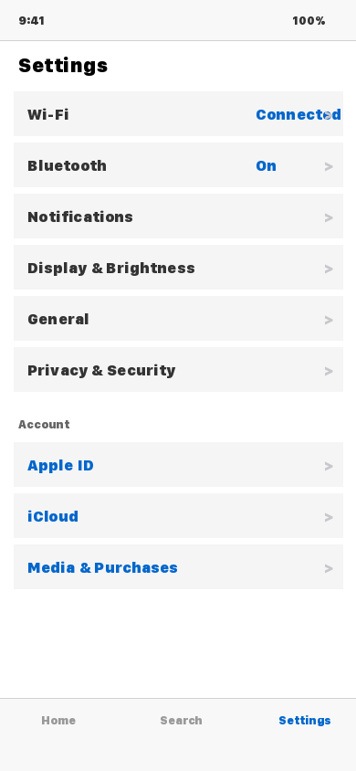
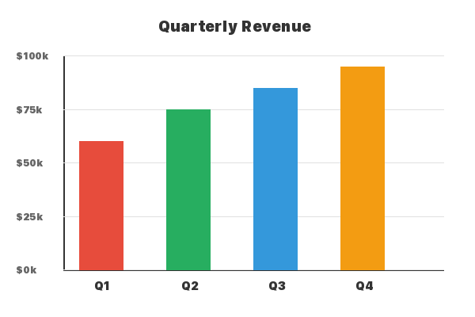
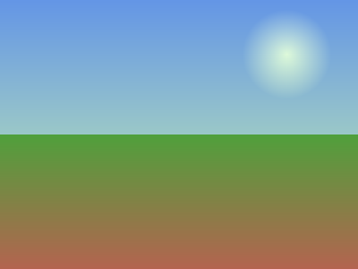

Toggle your system theme (or use the buttons below) to see AIF in action.

ContentType: screenshot | Strategy: clut-remap
ContentType: diagram | Strategy: luminance-map
ContentType: photo | Strategy: brightness(0.85)